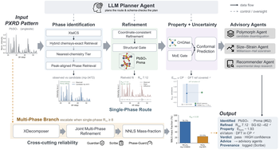

Powder X-ray diffraction (PXRD) analysis with deep learning is typically trained on simulated spectra, yet deployment happens on real measurements. Xtalyst diagnoses the resulting simulation-to-real gap, shows it is structural rather than additive noise, and locates a small rigid peak-position drift as its single largest correctable component — peak-alignment more than doubles the median retrieval correlation on real spectra. The remaining structure is bridged by real-spectrum fine-tuning and physics-based refinement inside a calibrated, multi-agent end-to-end pipeline spanning phase identification, full-profile Rietveld refinement, mass-fraction quantification, and conformal formation-energy prediction. On a frozen held-out set of 534 measured spectra, Xtalyst reproduces development performance where it is strong — every number reported with its sample size and a 95% Wilson confidence interval — and the calibrated-uncertainty layer recovers near-nominal coverage once recalibrated on real spectra.
We test two hypotheses for the gap. Additive degradation — the kind a denoiser removes — is ruled out: a 1-D U-Net leaves the real-spectrum correlation essentially unchanged, even though the same network improves its synthetic task by +0.30. The gap is therefore structural. That structure is dominated by a small rigid peak-position drift between the simulated candidate lattice and the measured pattern: correcting it (peak-alignment) delivers the largest single gain among the strategies tested. Remaining structural effects — intensity redistribution and anisotropic lattice mismatch — are bridged downstream by physics refinement and real-spectrum fine-tuning.
Xtalyst wraps the diagnosis into a calibrated pipeline with a multi-agent control and reliability layer. The contribution is not the chaining of external tools: five models are trained or fine-tuned on real spectra, more than ten algorithms are self-developed, and the two integrated prior tools are modified, not copied.

XtalCS (a real-RRUFF fine-tuned crystal-system classifier) supplies a soft prior; a chemsys-exact retrieval is reranked by a peak-aligned reranker across tiers.
Full-profile refinement (PyWPEM wrapped by a coordinate-consistency layer) that also resolves an axis-convention pitfall which can inflate a downstream energy comparison.
CHGNet formation energy (best of 8 MLIPs benchmarked), NNLS quantitative phase analysis, and a distribution-free conformal interval on every energy.
Control & reliability layer. An LLM planner (schema-validated, with a deterministic fallback — no LLM output enters the physical computations) routes the chain. Three advisory agents (Polymorph, Size/Strain, Recommender) turn results into operator advice, and a reliability layer wraps the loop: Guardian (bounded replan), Scribe (provenance), and Phase-Guard (detection-limit checks).
The headline evaluation is a frozen held-out partition of 534 spectra (from 2,696 ingested), used exactly twice across the whole study. The pipeline reproduces development performance where it is strong — every number reported with its sample size n and a 95% Wilson confidence interval.
| Held-out metric | Value | 95% CI | n |
|---|---|---|---|
| XtalCS crystal-system top-1 | 49.4% | [43.3, 55.5] | 251 |
| Stage-1 phase ID (median peak-aligned r) | 0.609 | ≈ dev 0.594 | 254 |
| Space group preserved on converged refinements | 100% | 127 / 127 | 127 |
| Conformal coverage @ α = 0.10 (real-spectrum recalib.) | 91.8% | [80.4, 97.7] | 49 |
| CHGNet formation-energy MAE vs DFT (best of 8 MLIPs) | 43.5 meV/atom | — | 307 |
Headline results are established on the frozen held-out partition rather than the development set; each predictive layer ships a distribution-free conformal interval, and production choices (CHGNet, NNLS, chemistry-aware retrieval) were selected by controlled, like-for-like comparison. The method's operating envelope is characterized through held-out validation and calibrated uncertainty rather than a single best-case number.
@article{Wang_Diagnosing_and_narrowing_2026,
author = {Wang, Shaoguang and Guo, Weiyu and Fei, Ben and
Shao, Xiaohong and Wang, Zhihui and Ouyang, Wanli},
journal = {Manuscript},
title = {{Diagnosing and narrowing the simulation-to-real gap in powder
X-ray diffraction with an instrument-in-the-loop workflow}},
year = {2026}
}